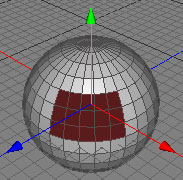
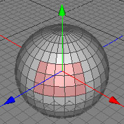

Flip Normal Tool
Cheetah3D depends strongly on the winding of its polygons because it needs it to calculate the polygon normals correctly. Sometimes if you load a 3D model which was created by a other modeling package it could happen that the winding of the imported polygons is wrong. These polygons then appear much darker in the 3D view because the polygon normal points into the wrong direction. See the first image below. The flip normal tool can now change the winding of the wrong polygons and therefore fix that problem.
 
Modes
The flip normal tool can only be applied to raw polygon objects. It's only available in the polygon mode.

To use the flip normal tool, select some polygons of a raw polygon object. If you don't select any polygons all polygons will be flipped. Then call the menu command "Tools PolygonFlip normal". The winding rule of all polygons in your selection will now be changed.
PolygonFlip normal". The winding rule of all polygons in your selection will now be changed.
Keys
- none
Properties
- none